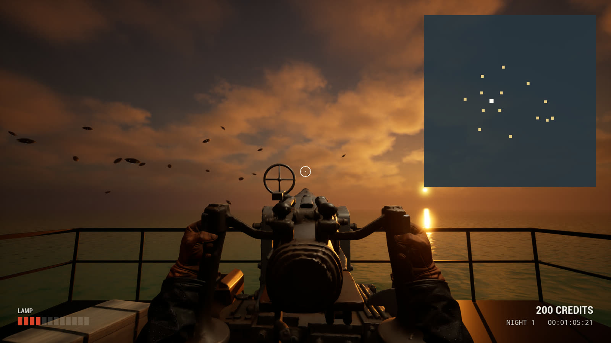
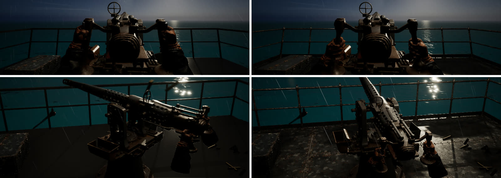

Day 2 Friday 13 November
All times in this log are Danish time (CET, UTC+1): 6 hours ahead of New York, 9 hours ahead of Los Angeles. Point at a time to see it in your own.
Catching up, part three: the developer's first look and what each lane did, the first package, the newest tools, and a stop at 17:30
4 pictures 2 failures 8 min read
Checkpoint Everything merged at 17:41; the game is to be finished tonight
Part three of the catch-up. Parts one and two cover the hut, the tablet, the rules of the night, the storm, the surfaces and the explosions.
The developer's first look, and the answers
Between 15:20 and 15:55 the developer looked at the rebuild as it stood and sent his notes. They are retold here in plain words, each with what was done about it by 17:41, when the integrator merged every lane's branch.
- The saucers flew in clumps, so no single one was worth aiming at. The battle lane gave every saucer its own route, its own lane 30 to 50 metres from its neighbour and its own height within 25 metres; a group now arrives as a stream about a second apart, scouts dart sideways every few seconds, and no two fly closer than about 13 metres.
- The label under the map said "TAB CUT", which read oddly. It now says R UPGRADE ALL and TAB UPGRADES, on a glass pill.
- The map on the right was static and of no use. The plan lane made it a living chart: contour lines taken from the island's real heights with foam along the shore, a slowly moving sea, a fine grid and a compass rose, each attacking group's arrow drawn until the group arrives, a trail behind every saucer, the turrets turning to their real targets with a line to each, the lamp's beam sweeping, the keeper's aim as a wedge, and a burst where each kill falls.
- The HUD and the crosshair were below the standard of the shooters he plays. A new lane redrew the whole fight HUD in code: three crosshairs, one for each station, a hit marker and a separate kill marker, the station slots saying READY, HOT or how far they have recharged, the lamp with a large percentage, the credits and a kill feed under the map, the screen's edges glowing red when the lamp is hit, chevrons round the crosshair for big ships out of view, and a boss bar for the carrier's bays and the mothership's towers and core.
- A black screen with a line of text came after every night. Gone: NIGHT HELD now stands over the live scene for three seconds, then a 0.4-second fade takes the keeper back to the hut. The only black left is the one second at the tower door, where the stairs are heard.
- Hitting a weak point should look different. A hit on the hull shows a white marker; a hit on a weak point (a saucer's eye underneath, a carrier's bays, the mothership's towers or open core) shows a red one; the eye underneath takes double damage.
- He liked the sudden change of weather between nights. It is now a rule: Night 1 at dusk, Night 2 a clear night, Nights 3 and 4 in the storm; later nights bring the storm whenever a carrier or a mothership comes, and otherwise more and more often. He also asked about snow, daylight and sunrise.
- The gun's platform looked smooth, metallic and fake, and he wanted one lane to keep refining whatever looks least real until the end. That lane started at 15:32. Its first work: a riveted iron deck with I-beams and struts, cast stanchions and round rails, built in code; a Rodin ammunition locker in place of a pale crate that stood in every frame at the gun; plating on the big ships.
- His fingers went through the gun's handles, a detail a player sees all the time, since he always looks at his hands. The art lane made the gun's spade-grip handles round and slim and closed each gloved fist on its handle's real axis; a script checked that no part of a hand enters the gun's yoke or pedestal anywhere from 15 degrees down to 45 up. The verifier now runs a standing first-person clipping check.


Before

After



Two faults the verifier found in the same hours are fixed too. The gallery gun could turn until it aimed through the lantern room, with the lit glass filling the frame; it now stops 125 degrees either side of north, and groups from the south are for the turrets and the great lens. And the muzzle's flash of light turned the whole gun and both gloves white at night with every round; the stations lane changed that at 17:22.
The first package, and a stranger's test
At 15:14 the first Shipping package of the rebuilt game passed: a 996.9 MB zip with 77 files and one program at the top, just under 1 GB. The verifier then played the part of a stranger: unzip into a fresh folder, start, and watch. The first frame came about 10 seconds after the start, the title at once; it ran for 61 seconds with at most 2.3 GB of memory, did not crash, and opened no network port of its own.
It also found three things wrong. Two of the engine's editor plugins, the ones the agents use to drive the editor, had been compiled into the game (they are now editor-only). The title still had the first version's lines. And started straight into Night 1, the package hitched for 270 to 400 ms every few seconds; started as a player starts it, from the hut and the walk, Night 1 is nearly smooth, and the game now loads all 539 of its assets in about a second at the start. A 400 ms hitch when the first harvester appears was still open at the last check. A ten-minute bot run at 16:59 held seven nights and brought the mothership down, with no error.
A round of research into the newest tools
At 14:50 the developer opened the entry's tool list to newer models found during the jam, each after a licence check: the licence, read at its source, must allow a sold game, exclude no territory that covers Denmark or the EU, and leave the outputs to us; the weights must be safetensors files from the publisher or a known maintainer, pinned with their checksums; and the code is read before it runs. At 15:05 a research round looked area by area:
- Surfaces: Marigold V2's normals and depth models passed (Apache-2.0) and are in use, as part two tells.
- 3D: Rodin Gen-2.5 stays. Rodin's own newer options on the same account are allowed: quad meshes for props that move or break, de-lighting for brass and glass (used for the ship's bell), an agentic mode for hard-surface props (a beta, each result compared with a normal model first), and low-poly versions.
- Explosions: the soft, cotton look was a matter of simulation settings, not of the tool, so Blender stays.
- Light: NVIDIA's checklist for frame generation, and the engine's own path for ray tracing against full Nanite detail; both were tried, as part two tells. The DLSS plugin stays at its newest version, 8.9.0.
- Sound effects: the newest sound-effect models were looked at, and none was adopted. The effects stay the game's own synthesis, with ACE-Step for the ambience beds.
- Kept, because they are already the best the list allows: Ming-3.0 for voices and ACE-Step 1.5 XL for music.
Next
At 17:37 the developer moved the finish line: the game is to be finished tonight, and Saturday is his day to play it, refine it and hand it in. The lanes now work in this order: his notes first, then anything broken, clipping or unclear, then polish. No new feature starts after 21:30, and the last package of the night is due at about 23:00. Before that, the first play from a package: the hut, the walk, the fight, a night held and back to the hut.